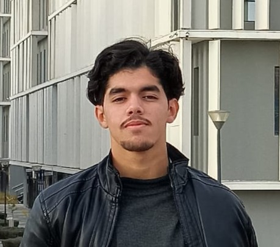

Étudiant ingénieur en 3ème année à l'ENSAM Meknès, spécialité Génie Électromécanique et Digitalisation Industrielle. Passionné par la robotique avancée, les systèmes embarqués et l'Industrie 4.0, je conçois et développe des systèmes mécatroniques complets : de la modélisation CAO et du dimensionnement mécanique, jusqu'à l'architecture logicielle ROS2 et la supervision industrielle IIoT.
Chef Technique du Club Robotique & Innovation Arts et Métiers (CRIAM) de l'ENSAM Meknès, j'encadre des équipes pluridisciplinaires sur des projets à forte valeur technique. Lauréat du 1er Prix au Rassemblement Euroméditerranéen des Clubs Universitaires, je suis également formateur interne en ROS2, Arduino/ESP32, et en développement de jeux (Unreal Engine / Unity3D).
Cinématique, ROS2 & Jumeau Numérique
Cinématique Inverse (IK) : Modélisation mathématique et implémentation C++ pour piloter 12 servomoteurs (3 DOF/patte). Développement d'algorithmes de génération de trajectoires (gait algorithms).
Jumeau Numérique (ROS2) : Déploiement du modèle mathématique dans ROS2. Validation de la cinématique et du comportement dynamique sous RViz.
Modularité : Architecture conçue pour supporter un bras manipulateur et la vision par ordinateur pour télémanipulation en milieu hostile.
Automatisé & Supervision IIoT (Node-RED)
Mes contributions techniques :
Contrôle Cinématique : Architecture distribuée avec Arduino UNO (algorithmes IK pour manipulateur 5-DOF) et module ESP32 (passerelle Edge/IoT).
Supervision SCADA : Télémétrie MQTT via HiveMQ. Dashboard Node-RED intégrant traçabilité, détection d'anomalies et arrêt d'urgence (E-Stop).
Industrie 4.0 : Prototypage (PoC) doté d'une architecture évolutive, conçue pour un passage à l'échelle intégrant des capteurs et actionneurs industriels lourds.
Prothèse Bionique, EMG, PCB KiCad & IA
Mon rôle (Hardware & IA) :
Hardware : Conception PCB d'un capteur EMG propriétaire via KiCad (schémas, routage anti-EMI).
Traitement du Signal & IA : Implémentation DSP et modèles de Machine Learning pour classifier les patterns EMG et déclencher les préhensions.
Mécanique : Cinématique inverse des doigts et optimisation topologique (CAO) pour portabilité et robustesse.
Mécatronique & ROS2
Ma contribution (Mécanique & ROS2) :
Modélisation CAO & RDM : Dimensionnement, sélection moteurs, analyse des efforts. Articulation du coude à 270° pour les environnements exigus.
ROS2 : Orchestration des actionneurs et télémétrie. Contrôleurs bas niveau et IK pour positionnement de haute précision.
Temps Réel : Optimisation des flux de données pour supprimer la latence entre le calcul et l'exécution.
AGV + Bras Manipulateur (Atelier)
Mes réalisations (Navigation & Manip.) :
Navigation Autonome : Guidage d'un chariot mobile (AGV) via capteur LiDAR sous ROS2.
Synchronisation Complexe : Coordination entre l'AGV et un bras manipulateur pour des opérations de pick-and-place autonomes en atelier.
Maintenance Prédictive, Grafana & InfluxDB
Architecture Distribuée : Raspberry Pi (Gateway/Broker MQTT) et ESP32 (Edge/Acquisition) pour automatiser l'irrigation.
Pipeline Data : Orchestration via Node-RED, stockage InfluxDB et supervision via Grafana.
Maintenance Prédictive : Analyse des cycles de pompes pour anticiper les défaillances industrielles.
Conception & Simulation FEA (Fusion 360)
Mes tâches (RDM & CAO) :
RDM & Dimensionnement : Calculs des éléments de transmission, efforts de cisaillement, torsion et flexion. Choix des moteurs, accouplements, roues dentées et arbres.
CAO & Prototypage : Modèle paramétrique sous Fusion 360, plans ISO, et simulations FEA.
Rassemblement Euroméditerranéen (UEMF)
Ma contribution (Soutenance) :
1ère Place Nationale : Victoire face à l'élite des clubs d'ingénierie marocains (Représentation ENSAM Meknès).
Soutenance : Présentation technique sur l'optimisation des ressources et l'architecture IoT agricole (Agriculture 4.0).
Club Robotique & Innovation Arts et Métiers
Pilotage technique de l'ensemble des projets robotiques (PCB, ROS2, CAO, intégration). Encadrement des membres juniors et représentation lors de compétitions (1er Prix UEMF).
Interne ENSAM Meknès
Animation de formations avancées sur ROS2, l'architecture distribuée, la navigation autonome et l'intégration Raspberry Pi pour les membres du club.
Interne ENSAM Meknès
Sessions pratiques sur l'électronique embarquée et les protocoles industriels (MQTT, Modbus, HTTP) orientées projets concrets.
Kresco Academia
Accompagnement personnalisé pour la maîtrise des matières d'algèbre, d'analyse et des sciences de l'ingénieur, ainsi que la préparation aux concours des Grandes Écoles.
Je suis activement à la recherche d'opportunités de stage et de collaboration en ingénierie mécatronique et Industrie 4.0. N'hésitez pas à consulter mes réseaux ou à m'envoyer un email.